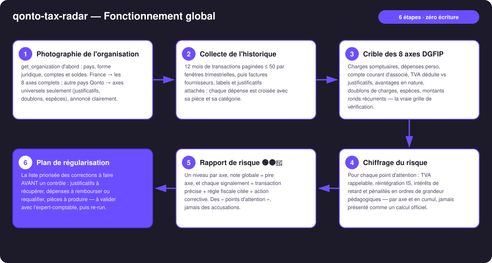
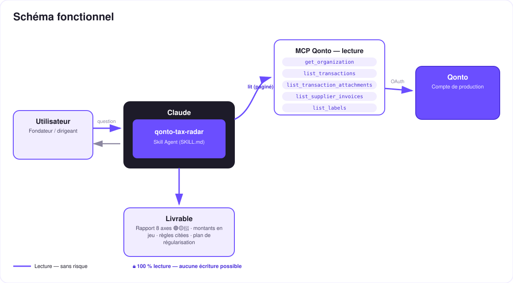

Le pré-contrôle fiscal qui travaille POUR toi — les 8 axes de la DGFIP passés sur ton compte Qonto, avant que le fisc ne le fasse.
La peur n°1 du dirigeant français, c'est le contrôle fiscal — et personne ne sait où il est vulnérable. Le skill inverse les rôles : il passe les transactions au crible des 8 axes de vérification qu'utilise réellement l'administration, et rend le rapport avant elle :
Somptuaires, dépenses perso, compte courant d'associé, TVA vs justificatifs, avantages en nature, doublons, espèces, montants ronds.
Chaque point = transaction précise + règle fiscale citée + niveau de risque + action corrective. Jamais d'accusation.
TVA rappelable, réintégrations IS, intérêts et pénalités — en ordres de grandeur pédagogiques.
Les corrections à faire AVANT le fisc — puis relance le skill et regarde la note s'améliorer.
| Prérequis | Détail | Obligatoire |
|---|---|---|
| Compte Qonto production | Le skill s'adapte à toute organisation — get_organization d'abord, zéro donnée en dur | ✅ |
| Pays | 8 axes et règles citées : France. Autres pays Qonto (DE, ES, IT…) : axes universels seulement (justificatifs, doublons, espèces, montants ronds), annoncé clairement | ℹ️ détecté |
| MCP Qonto connecté | Connecteur officiel (claude.ai / Claude Desktop), login OAuth | ✅ |
| Historique ≥ 12 mois | En dessous : couverture partielle annoncée, jamais de finding inventé | ⭕ |
| Écriture, consentement | Aucun — lecture seule intégrale, il n'y a littéralement rien à autoriser | — |

attachment_ids, attachment_required, vat_amount font l'essentiel ; list_transaction_attachments ne vérifie que les transactions sur le point d'être signaléesemitted_at (le settled_at décale d'1-2 jours — un achat du dimanche peut apparaître le mardi)403 missing oauth scope sur list_cash_flow_categories → attendu sur le connecteur claude.ai, repli sur les labels
Lecture seule intégrale — le point clé : il n'y a que des traits pleins (lecture). Aucun outil d'écriture n'est jamais appelé : impossible de modifier une transaction, de poser un label ou de déplacer un centime. C'est le contrôleur qui regarde le dossier de ton côté du bureau.
| # | Axe | Ce que le skill détecte | Règle citée |
|---|---|---|---|
| 1 | Charges somptuaires | Restaurants haut de gamme (montant/couvert), voyages, cadeaux au-delà des seuils (TVA cadeaux ≤ 73 € TTC/an/bénéficiaire ; relevé 2067 si cadeaux > 3 000 €/an ou réceptions > 6 100 €/an) | art. 39-4 CGI ; art. 28-00 A ann. IV CGI |
| 2 | Dépenses perso en pro | Achats week-end/dimanche, enseignes hors objet social (jeux, habillement, loisirs), abonnements grand public | art. 39-1 CGI ; acte anormal de gestion |
| 3 | Compte courant d'associé | Virements vers bénéficiaires « perso », allers-retours avec le dirigeant, motifs de CCA débiteur | art. L223-21 C. com. ; art. 111-a CGI |
| 4 | TVA déduite vs justificatifs | vat_amount > 0 et aucun justificatif attaché → TVA déduite sans facture à présenter | art. 271 II CGI — pas de facture, pas de déduction |
| 5 | Avantages en nature | Véhicule, téléphone, logement, abonnements à usage mixte payés par la société sans trace de déclaration | art. 82 CGI ; BOSS |
| 6 | Doublons de charges | has_duplicates sur factures fournisseurs ; même contrepartie + même montant à ± 72 h | art. 54 CGI ; art. 1729 (contexte seulement) |
| 7 | Espèces | Retraits ronds récurrents ; paiements pro en espèces > 1 000 € | art. L112-6 + D112-3 CMF |
| 8 | Transactions rondes récurrentes | Montants ronds réguliers vers un même bénéficiaire sans facture en face | art. 54 CGI — charge de la preuve |
Niveau 🟢🟡🔴 par axe, piloté par le nombre et les montants des signalements. Note globale = pire axe : un vrai contrôle suit le point faible. Vocabulaire imposé : « point d'attention », « à documenter » — jamais « fraude ».
| Sortie | Format | Quand |
|---|---|---|
| Réponse dans la conversation | Bandeau global + tableau 8 axes + détail des signalements + plan de régularisation (markdown) | Toujours — c'est la base |
| « Avis de pré-contrôle » interactif | Fichier/artifact HTML : note globale, jauges par axe, tableau des signalements, checklist | Si l'hôte affiche les fichiers (artifacts claude.ai, Claude Desktop, Claude Code) ; repli automatique sur le markdown sinon |
| Re-run comparatif | Même rapport, avec l'évolution de la note | À chaque relance — la boucle de rétention |
La démo ≤ 3 min jointe à la PR suit le storyboard : la peur du contrôle → lancement du pré-contrôle → les signalements axe par axe (article cité à l'écran) → le rapport qui tombe (« 2 points rouges : 1 430 € de TVA déduite sans justificatif, et 3 dépenses à requalifier — corrige ça ce mois-ci et ton dossier est propre ») → garde-fous. Tournée en live sur un compte de production réel.
| Idée | Effort | Note |
|---|---|---|
Mode « remédiation assistée » : request_attachment_upload + labels « à documenter », sous consentement explicite | Faible | Les writes existent dans le MCP — v1 volontairement lecture seule, c'est le positionnement |
| Grilles de vérification par pays (DE · ES · IT…) | Moyen | Qonto est paneuropéen ; v1 = France + axes universels |
| Multi-MCP optionnel : croiser l'axe 4 avec les factures retrouvées dans Gmail/Drive | Moyen | Détection dynamique — s'active si le MCP est présent, sinon le skill le dit et continue |
| Suivi de la note dans le temps (historique des re-runs) | Faible | La boucle de rétention, chiffrée |
| 9e axe : cohérence CA (factures encaissées vs entrées) | Moyen | Déjà dans l'ADN de la proposition d'origine |